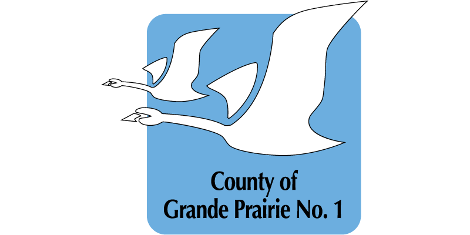
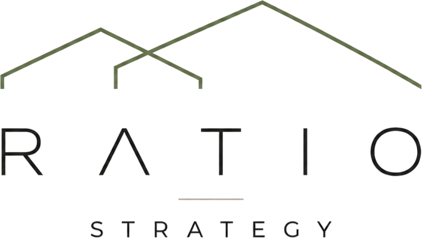
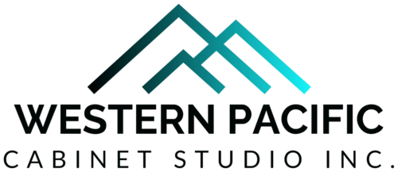

The organizations
we work with.
Book a 15-minute callFrom municipalities across Canada navigating crisis communications and AI adoption, to small businesses building their digital presence. These are the organizations that trust Spencer Morley Consulting.
Municipal and government

County of Grande Prairie No. 1 Municipality of Jasper
Municipality of Jasper- Red Deer County
 Saddle Hills County
Saddle Hills County County of Minburn
County of Minburn
Businesses
 Strategic Steps Inc.
Strategic Steps Inc.
Ratio Strategy
Western Pacific Cabinet Studio Inc.- Groove-V Productions
- The Grooveyard
Spencer Morley Consulting is based in Edmonton and works with municipalities and businesses across Canada. This list grows as new engagements begin.
Read the work
behind the names.
Four engagements documented in full: what the scope was, how it was approached, and what it produced.
Explore our workTell us what you’re facing.
Choose a time to talk. Or explore the request form below.
Book a 15-minute call